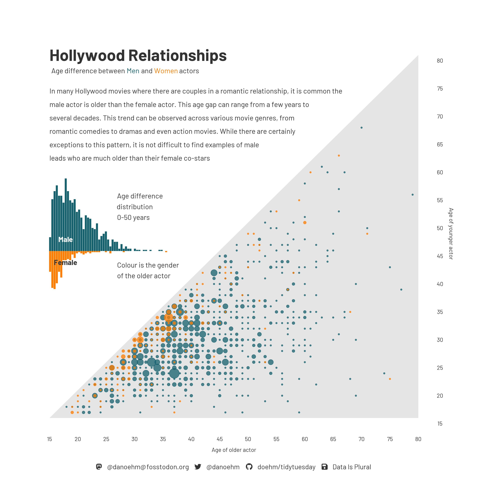
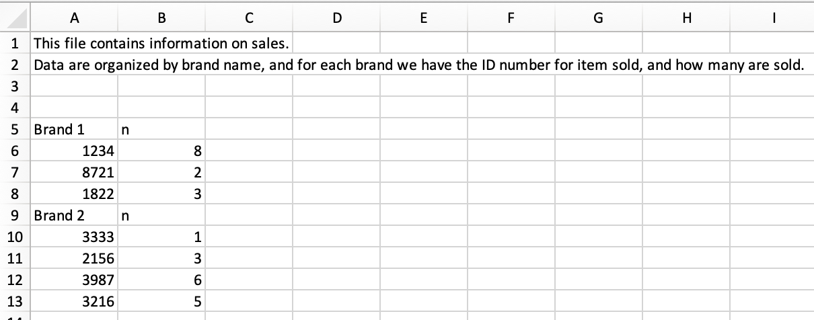

Importing and recoding data
Lecture 9
Warm-up
While you wait…
Go to your
aeproject in RStudio.Make sure all of your changes up to this point are committed and pushed, i.e., there’s nothing left in your Git pane.
Click Pull to get today’s application exercise file: ae-09-age-gaps-sales-import.qmd.
Wait till the you’re prompted to work on the application exercise during class before editing the file.
Announcements
Midterm things
- Focus
- Format
- Prep
- Review
- Accommodations
From last time
Finish up: ae-08-durham-climate-factors
Go to your ae project in RStudio.
Open
ae-08-durham-climate-factors.qmdand pick up at “Recode and reorder”.
Reading data into R
Reading rectangular data
- Using readr:
- Most commonly:
read_csv() - Maybe also:
read_tsv(),read_delim(), etc.
- Most commonly:
. . .
- Using readxl:
read_excel()
. . .
- Using googlesheets4:
read_sheet()– We haven’t covered this in the videos, but might be useful for your projects
Application exercise
Goal 1: Reading and writing CSV files
Read a CSV file
Split it into subsets based on features of the data
Write out subsets as CSV files
Age gap in Hollywood relationships
What is the story in this visualization?

ae-09-age-gaps-sales-import - Part 1
Go to your ae project in RStudio.
If you haven’t yet done so, make sure all of your changes up to this point are committed and pushed, i.e., there’s nothing left in your Git pane.
If you haven’t yet done so, click Pull to get today’s application exercise file: ae-09-age-gaps-sales-import.qmd.
Work through Part 1 of the application exercise in class, and render, commit, and push your edits.
Goal 2: Reading Excel files
Read an Excel file with non-tidy data
Tidy it up!
Sales data

. . .
Are these data tidy? Why or why not?
Sales data
What “data moves” do we need to go from the original, non-tidy data to this, tidy one?

ae-09-age-gaps-sales-import - Part 2
Go to your ae project in RStudio.
If you haven’t yet done so, make sure all of your changes up to this point are committed and pushed, i.e., there’s nothing left in your Git pane.
If you haven’t yet done so, click Pull to get today’s application exercise file: ae-09-age-gaps-sales-import.qmd.
Work through Part 2 of the application exercise in class, and render, commit, and push your edits.